Generative Archetype-Grounded Item Representations for Sequential Recommendation
这篇 WWW 2026 论文由香港中文大学 Yifan Li 等作者完成，合作机构包括 McGill University 和 Tongji University。论文入口为 arXiv:2606.11023。它关注的问题不是再设计一个新的序列建模 backbone，而是重新思考 item representation：一个商品、餐厅或内容条目究竟应该只由 ID、静态文本属性和历史共现来定义，还是也应该由“最可能被它吸引的目标用户画像”来定义。GenAIR 的答案是后者：先用 LLM 从 item metadata 生成目标受众 archetype，再把生成过程中的 hidden states 压成 item embedding，并用真实用户行为共现对这个语义空间做校准。论文 PDF 明确给出了代码入口 https://github.com/AI-Santiago/GenAIR，本轮只核验到该入口出现在论文首页，未重新运行仓库实验。
1. 背景和问题
序列推荐的目标通常可以说得很简单：给定用户按时间排列的历史交互序列，预测下一个最可能交互的 item。真正困难的地方在于，推荐模型看到的不是“物品本身”，而是某种可训练的 item representation。传统 GRU4Rec、SASRec、BERT4Rec 等模型主要使用 ID embedding；ID embedding 在交互数据充足时可以吸收共现模式，但在真实推荐系统中，长尾 item、稀疏行为、冷启动 item、新内容上线和跨域迁移会让 ID 表征变得脆弱。一个只出现过少量次的 item，即使 metadata 很丰富，也很难通过 ID embedding 学到稳定的语义边界。论文把这一点作为起点：如果 item representation 的质量有限，后面的序列模型再复杂，也只能在一个贫乏的 item 空间里做序列推断。
LLM4Rec 方向试图用语言模型补足这个问题。已有方法大致有两条路线。第一条是 text-based tuning：把 item name、brand、description 等文本属性放进 LLM 或文本编码器，得到更丰富的语义 embedding，有些工作还会围绕推荐任务继续微调语言模型。第二条是 behavior-based tuning：承认 LLM 语义空间和推荐 ID 空间不一致，于是用行为模型、ID embedding 或额外对齐目标把两者拉近。两条路线都合理，但本文认为它们各自留下了关键缺口。text-based tuning 往往只编码固定属性，容易把 item 身份理解成静态文本；behavior-based tuning 依赖推荐模型学到的 ID 空间作为监督，而 ID 空间本身受稀疏性和流行度偏差影响，可能把错误结构传回语义空间。
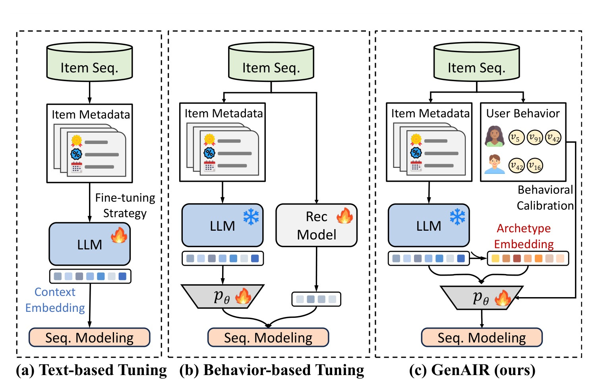
这张对比图是理解论文动机的关键。左侧 text-based tuning 直接用 item metadata 和 LLM 产生 context embedding，再把它接入序列模型；中间 behavior-based tuning 加入推荐模型来对齐 LLM 和行为空间；右侧 GenAIR 则显式增加了 User Behavior 和 Archetype Embedding 两个环节。它并不是只问“这个 item 的文本描述是什么”，而是问“哪类用户最可能被这个 item 吸引”，再用真实行为共现去校准这些由目标受众推断出的语义表示。换句话说，GenAIR 的 item identity 不再只来自 item 自己的属性，也来自 item 与潜在目标用户之间的定位关系。这个转向很重要，因为推荐里的 item 往往不是孤立物体：同样是太阳帽，婴幼儿防晒帽、户外运动帽、时尚穿搭帽对应的是完全不同的目标人群和购买情境；如果模型只看“hat”和“sun protection”，很可能把用户意图混在一起。
本文借用了 STP 框架，也就是 Segmentation、Targeting、Positioning。STP 在营销语境里强调，产品身份不仅由物理属性决定，也由它面向的市场细分和目标群体决定。论文把这个思想迁移到推荐表征中，定义 Archetype 为“某个 item 理想目标受众的概念画像”。这种画像不是某一个真实用户，也不是用户画像聚类的结果，而是 item provider 在设计、功能、定价、描述和营销中隐含的目标用户假设。一个儿童防晒帽的 archetype 可能是关心安全、防晒、舒适、可爱设计的父母或照护者；一个高端餐厅的 archetype 可能是重视场景体验、预算较高、偏好特定菜系的消费者。这样的语义，比静态属性更接近推荐任务里“谁会需要它”的问题。
GenAIR 要解决的核心矛盾由此变成三层。第一，archetype 本身通常不可见，推荐平台没有显式字段告诉模型“这个 item 的理想受众是谁”，只能从 metadata 推断。第二，LLM 可以生成这种受众画像，但 LLM 生成的语义仍然是语言空间里的推断，未必与真实点击、购买、签到或评分行为一致。第三，推荐模型需要的是可接入 GRU、Transformer 或其他 sequence encoder 的向量，而不是长段文本解释。因此，论文的路线不是让 LLM 在线参与推荐，也不是把推荐任务完全改造成生成任务，而是把 LLM 的生成能力离线转化为 item embedding，并在训练时用真实行为结构校准。
这个问题设定对工业推荐很有现实意义。LLM 在线推理通常成本高、延迟不可控，而序列推荐在线服务又需要大量候选 item 的低延迟打分。如果一种方法每次请求都要调用 LLM，它很难直接进入高 QPS 推荐链路。GenAIR 选择把 LLM 调用前置到 item representation 构建阶段，并把生成出的 embedding 缓存下来，因此它更像一个 item embedding replacement 或 initialization framework。论文也强调它可以和 GRU4Rec、BERT4Rec、SASRec 等不同 backbone 集成，这意味着贡献点集中在 item 表征层，而不是某个特定序列模型结构上。
这篇论文的另一个背景是长尾和稀疏性。实验使用 Yelp、Amazon Beauty、Amazon Fashion 三个数据集，稀疏度都接近或超过 99.89%。这类数据里，item 的行为共现矩阵非常稀疏；越是长尾 item，越难只靠历史行为得到可靠 embedding。LLM 的知识可以提供语义补充，但如果语义补充只来自属性文本，就会忽略“相似文本未必对应相似用户群”这一点。GenAIR 试图把两者结合：先用 LLM 根据 metadata 生成目标受众语义，再用行为共现决定哪些 item 应该在 embedding 空间中少被推开、哪些 item 可以保持距离。这样它把“语义可解释性”和“行为可用性”放在一个训练目标里。
因此，本文的研究问题可以概括为：能不能构造一种 item representation，使它同时满足四个条件：一是保留 LLM 对 item metadata 的语义理解；二是利用 LLM 的生成能力显式补出目标受众 archetype；三是通过真实交互日志把语义空间校准到行为空间；四是在推理时不增加 LLM 调用和明显计算负担。GenAIR 的方法、公式和实验都围绕这四个条件展开。
2. 方法
2.1 Archetype：把 item 身份从静态属性改写为目标受众假设
论文先给出标准序列推荐定义。设 item 集合为 $V$，用户历史交互序列为 $Q$，目标是在所有候选 item 中找到最可能成为下一次交互的 $v_{N+1}$：
符号解释：$Q$ 是按时间排序的历史序列，$v_i$ 是候选 item，$P(v_{N+1}=v_i\mid Q)$ 是给定历史后选择候选 item 的概率或打分。传统 embedding-sequence 框架先用 $Emb(\cdot)$ 把 item 映射成 $e_i$，再用 $Seq(\cdot)$ 从 $\{e_1,e_2,\ldots,e_N\}$ 得到用户表示 $u$，最后用 $u^\top e_i$ 或等价打分函数做匹配。GenAIR 保留这个总体范式，但把 $Emb(\cdot)$ 的来源从单纯 ID embedding 改成由 LLM archetype 生成和行为校准得到的 item representation。
Archetype generation 的输入是 item metadata。论文记为 $C_i$，可以包含 item name、brand、date、feature、price、rating、description 等字段。这里的关键不是字段越多越好，而是这些字段共同构成了 LLM 推断目标受众的证据。比如 item description 暗示功能和场景，price 暗示消费层级，rating 暗示市场反馈，brand 暗示定位，feature 暗示使用约束。GenAIR 把这些字段放入一个简单 prompt，要求 LLM 识别“this item would appeal to” 的用户类型：
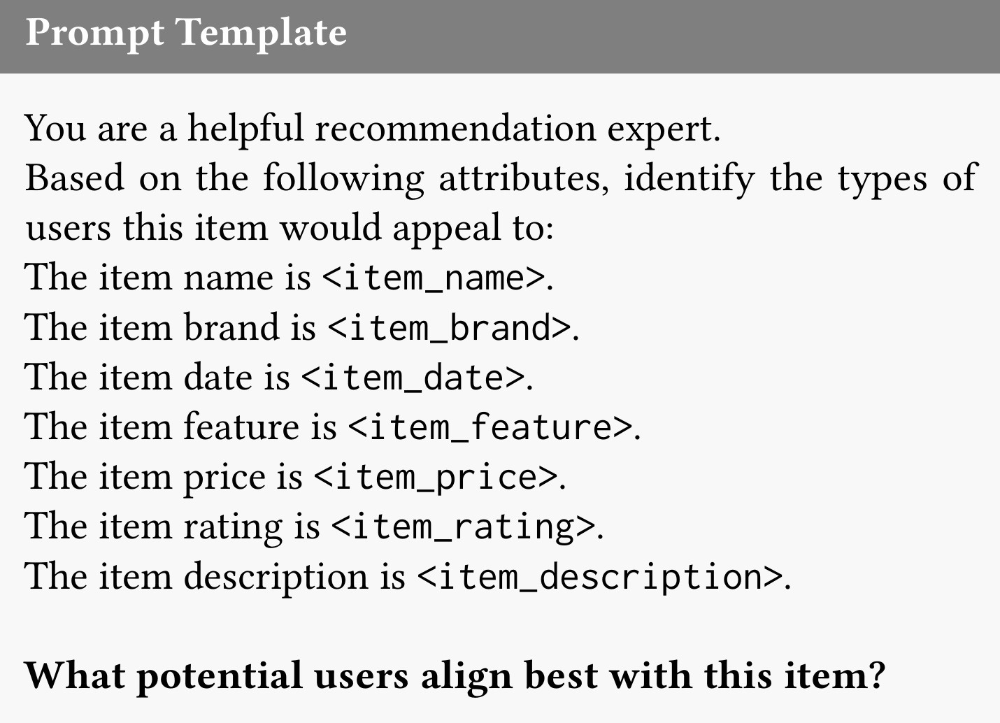
这张提示模板看起来很朴素，但它定义了本文和普通文本编码路线的边界。普通文本编码可能直接把 item description 当成 embedding 输入，而这里的 prompt 明确要求模型从属性推断 potential users。也就是说，LLM 的任务不是摘要 item，而是站在推荐专家视角推断目标受众。论文把生成结果记为 $A_i$：
符号解释：$C_i$ 是第 $i$ 个 item 的结构化 metadata，$PromptTemplate(\cdot)$ 把这些字段组织成指令，$A_i$ 是生成出的 textual archetype。这个公式本身很短，但含义很重：item representation 的中间状态从属性文本转成了目标受众文本。对于推荐任务，这等于把“item 是什么”转成“item 适合谁”。如果一个 item 的属性里没有直接写明用户类型，LLM 可以基于常识和世界知识推断；如果 metadata 很短，生成的 archetype 至少提供了一种可解释的语义扩展。
这个环节也有风险。LLM 生成的 archetype 可能过度泛化，可能被 prompt 诱导出不相关用户，可能对稀有品类产生错误常识。论文附录 Table 7 用婴幼儿防晒帽例子说明，不同 LLM 的 archetype 质量会有差别：Llama 2 可能生成“运动员、旅行者、摄影师”等过宽目标群体，Qwen 2.5 则更集中在 parents、guardians、grandparents、outdoor family activities 等与 item 更一致的人群。因此，archetype 生成不能被视为最终真相，它只是一个语义候选空间，后续还需要行为校准和实验验证。
2.2 Prefill 与 decoding hidden states：一次前向中抽取两类语义
GenAIR 没有把生成的 $A_i$ 只当成文本保存，而是在一次 autoregressive LLM 调用里同时抽取两类 hidden states。第一类来自 prefill phase：LLM 读取 prompt 和 metadata 时产生的最后一层 hidden states，论文记为 $H_i^{prefill}\in\mathbb{R}^{n_p\times d_{LLM}}$。第二类来自 decoding phase：LLM 逐 token 生成 archetype 文本时对应的 hidden states，记为 $H_i^{decoding}\in\mathbb{R}^{n_d\times d_{LLM}}$。其中 $n_p$ 是输入 token 数，$n_d$ 是生成 token 数，$d_{LLM}$ 是语言模型 hidden dimension。
论文用 mean pooling 把两个 token 序列分别压成固定长度向量：
符号解释：$E_i^{prefill}$ 更偏向 item factual attributes，因为它来自模型处理输入 prompt 和 metadata 的阶段；$E_i^{decoding}$ 更偏向 inferred target audience，因为它来自生成 archetype 的阶段。这个拆分是 GenAIR 的一个细节亮点：它没有只取最后输出文本的 embedding，也没有只取输入文本的 embedding，而是认为“读入 item 属性”和“生成目标受众”是两类互补表征。
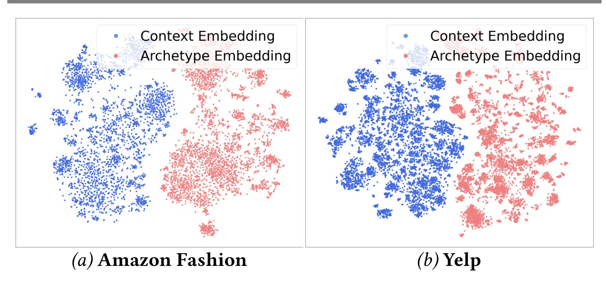
Figure 2 支持了这种拆分。蓝色 context embedding 与红色 archetype embedding 在 Amazon Fashion 和 Yelp 上形成明显不同的空间分布。这说明生成阶段不是输入阶段的简单复制，而是经过 LLM 推理后产生了另一种语义投影。对推荐而言，这个差异很有价值：context embedding 记录 item 的事实描述，archetype embedding 记录潜在用户偏好。两者都可能有噪声，但它们的噪声来源不同，拼接后再校准比单独使用某一类表征更有表达力。
这里还要注意效率。论文强调 prefill 和 decoding embedding 在同一次 forward pass 中得到。也就是说，生成 archetype 文本时顺手保存 hidden states，不需要再对生成文本额外跑一遍 encoder。对于离线 item catalog 构建，这种设计减少了额外计算。它仍然需要 LLM 生成，因此不是零成本；但成本发生在离线表征构建阶段，推理阶段可以复用缓存的 item embeddings。
2.3 投影到推荐 latent space：PCA、拼接与 MLP projector
LLM hidden dimension 通常远大于推荐模型 item embedding dimension，直接把 $E_i^{prefill}$ 和 $E_i^{decoding}$ 接入推荐 backbone 既昂贵也可能含噪。论文先分别对两类 embedding 做 PCA，保留能够解释 95% 方差的主成分，记为 $\hat{E}_i^{prefill}$ 和 $\hat{E}_i^{decoding}$。随后将二者拼接：
符号解释：$E_i$ 是包含 factual context 与 generated archetype 的 fused semantic representation。PCA 的作用不是学习推荐目标，而是做 signal-to-noise separation 和降维；拼接的作用是显式保留两类来源，而不是提前让它们混成一个不可分辨的向量。论文在实现细节里给出，PCA 后 item embedding 维度为 384，最后映射到各方法统一的 128 维推荐 embedding。
然后 GenAIR 使用一个 trainable projector $p_\theta$ 将 fused semantic representation 映射到推荐模型 latent space：
符号解释：$p_\theta$ 在论文中实现为 MLP，$\theta$ 是可训练参数，$e_i$ 是最终交给序列推荐模型使用的 item embedding。这里的设计和很多语义增强推荐方法相似：LLM 产生高维语义，projector 负责把它压到推荐模型可用空间。但 GenAIR 的差异在于 projector 的训练不仅服务 ranking loss，还会受到 behavioral calibration objective 的影响。也就是说，projector 不只是维度适配器，也是把 archetype semantic space 调整成 behavior-aware embedding space 的关键模块。
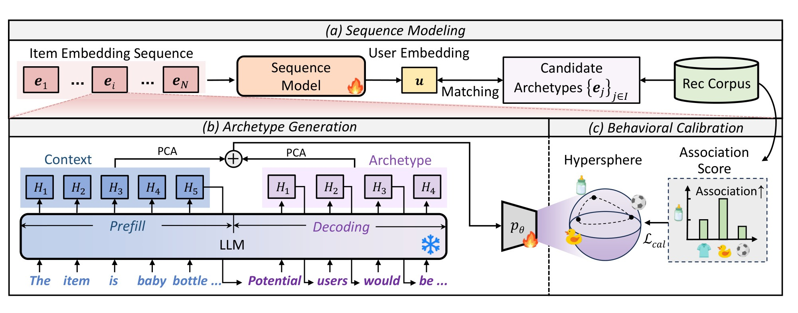
这张总览图把流程分成三块。上方的 sequence modeling 表示最终 item embeddings 仍然按序列进入 backbone；左下 archetype generation 展示 prefill 与 decoding hidden states 如何经过 PCA 和拼接；右下 behavioral calibration 展示 item embeddings 被投影到 hypersphere 后，通过 association score 调节 $L_{cal}$。这张图也说明 GenAIR 和“把 LLM 当在线 reranker”不同：LLM 位于离线表征生成环节，推荐模型的在线输入仍是 item embedding sequence 和 candidate item embeddings。
投影阶段有一个工程含义：它允许 GenAIR 与多个 backbone 兼容。GRU4Rec 使用 recurrent encoder，SASRec 使用 causal self-attention，BERT4Rec 使用 bidirectional context；只要这些模型能接收 item embedding，GenAIR 就可以替换原始 ID embedding 或语义 embedding。论文后续在三个 backbone 上实验，就是为了验证这种 model-agnostic claim。如果某个方法只在 SASRec 上有效，很可能是架构特化；如果它在 GRU、BERT-style、SAS-style 序列模型上都有效，就更像是 item representation 本身的改进。
2.4 Behavioral Calibration：用共现关系调节 hypersphere 上的排斥力
仅有 LLM archetype 还不够。LLM 可以根据属性推断目标用户，但真实用户行为可能和语言常识不同。比如两个 item 在语义上都属于“婴儿用品”，但一个常与玩具一起购买，另一个常与医疗护理品一起购买；它们的推荐邻域未必相同。反过来，两个 item 文本差别很大，却可能被同一类用户在同一场景中连续交互。因此，GenAIR 引入 behavioral calibration，把 real-world co-occurrence signal 注入 embedding geometry。
论文先把所有 item embedding 投影到单位 hypersphere：
符号解释：归一化后，angular distance 或 dot product 可以作为 item 间关系度量。许多 contrastive representation learning 工作会使用 uniformity objective，让 embeddings 在球面上尽量均匀分布，以提高表达容量。但直接均匀推开所有 item 有一个问题：推荐场景中的 item 并不应该被等强度排斥。真实行为中频繁共现的 item 应该保留较近关系；从不共现或行为场景差异很大的 item 才更适合被推远。
论文从普通 Gaussian kernel 写起：
接着定义行为共现统计 $C(i,j)$，表示 item $i$ 和 item $j$ 在用户上下文中共同出现的次数，并用 log scaling 得到 association score：
符号解释：$C(i,j)_{max}$ 是所有 item pair 中最大的共现次数。这个归一化把不同流行度下的 co-occurrence 变成可比较的 $[0,1]$ 量级信号。使用 $\log(1+C)$ 是为了缓和热门 item 的极端计数差异，避免头部 item 共现过大而压制其他 pair。
随后用 association score 构造 behavioral regulator：
符号解释：$\gamma$ 控制共现关系对排斥强度的衰减。若两个 item 共现强，$S(i,j)$ 大，$w(i,j)$ 小，它们在 uniformity-like objective 中受到的排斥就更弱；若两个 item 共现弱，$w(i,j)$ 接近 1，它们仍会被正常推开。这是“differential repulsion”的核心直觉：不是把相似 item 主动拉近，而是减少强关联 item 之间不必要的排斥，让行为邻近关系在训练中保留下来。
结合距离和行为调节，校准 kernel 写为：
在 $\ell_2$ 归一化条件下，平方欧氏距离可以转成 dot product 形式，论文进一步写为：
符号解释：$e_i^\top e_j$ 是推荐模型常用的相似度，$\beta$ 来自距离到内积的等价变换，常数项被吸收。这个形式很关键，因为它把 calibration objective 和推荐打分的 dot-product geometry 对齐。最终校准损失是 mini-batch 上 kernel expectation 的近似：
进一步，论文给出 Proposition 3.1，把梯度解释为 weighted repulsive force：
符号解释：$\mathcal{B}$ 是 mini-batch 中的 item pair 集合。梯度大小同时受 $e_i^\top e_j$ 和 $w(i,j)$ 影响。相似度高的 pair 如果行为共现弱，仍会产生较强排斥；相似度高且行为共现强的 pair 因 $w(i,j)$ 较小，排斥会被减弱。这种机制比“直接把共现 item 拉近”更温和，因为它保留了 hypersphere uniformity 的表达容量，同时允许真实行为结构对空间分布施加约束。
2.5 训练与推理：把 GenAIR 当作可替换 item embedding 层
在训练阶段，序列模型接收由 GenAIR 得到的 item embeddings $\{e_i\}$。给定用户序列 $v_{1:n_u}$，模型得到 user representation $u$，并用候选 item embedding 做打分：
推荐任务本身使用 pairwise ranking loss。论文写为：
符号解释：$v_{k+1}^{+}$ 是真实下一个 item，$v_{k+1}^{-}$ 是采样负例，$\sigma$ 是 sigmoid 函数。不同 backbone 的具体训练形式会有差异，例如 GRU4Rec 可使用 sequence-to-one pairwise loss，SASRec 更自然地对应 sequence-to-sequence 预测，但总体都是让正例得分高于负例。
最终优化目标把 ranking loss 和 calibration loss 相加：
符号解释：$\alpha$ 控制 behavioral calibration 的权重。$\alpha$ 太小，校准信号弱，LLM archetype embedding 可能仍停留在语义空间；$\alpha$ 太大，行为结构可能过度主导训练，影响 ranking loss 收敛。论文的超参数实验正是围绕这个权衡展开。训练完成后，item embeddings 可以提前缓存，推理时只执行 sequence model 和 dot-product matching，不需要再次调用 LLM，也不需要计算 calibration loss。因此，GenAIR 的在线代价主要是替换后的 item embedding 查表和常规序列模型推理。
从实现角度看，GenAIR 的流程可以拆成离线和在线两层。离线层包括 metadata 整理、LLM prompt 生成、prefill/decoding hidden states 抽取、PCA、fused embedding 构建、行为共现统计和推荐模型训练。在线层只需要给定用户历史序列，读取已经训练好的 item embeddings，经过 sequence model 计算 user embedding，再对候选 item 排序。这个设计让 GenAIR 更接近可部署的 embedding enhancement framework，而不是高成本的生成式 recommender serving。
方法的一个潜在边界是共现统计质量。如果行为日志有强曝光偏差、推荐系统历史策略偏置或虚假共现，$C(i,j)$ 会把旧系统偏差带入 calibration objective。另一个边界是 metadata 覆盖度：如果 item metadata 缺少关键属性，LLM 生成 archetype 的依据会变弱，甚至产生错误画像。第三个边界是 LLM 选择：附录和 Table 4 都说明不同基础 LLM 的生成质量会影响结果，尽管整体框架具有一定鲁棒性。也就是说，GenAIR 的核心不是“LLM 一定更懂推荐”，而是把 LLM 生成出的受众假设作为一个可校准、可冻结、可替换的 item 表征来源。
3. 实验结果
论文实验围绕五个问题展开：GenAIR 在不同 sequential recommendation backbones 上是否有效；各组件是否必要；$\alpha$ 和 $\gamma$ 是否敏感；更换基础 LLM 后是否稳定；训练和推理成本是否可接受；以及它对不同流行度 item group 的 embedding 分布有什么影响。数据集包括 Yelp、Amazon Beauty 和 Amazon Fashion，指标为 HR@10 与 NDCG@10，结果取三次独立运行平均。
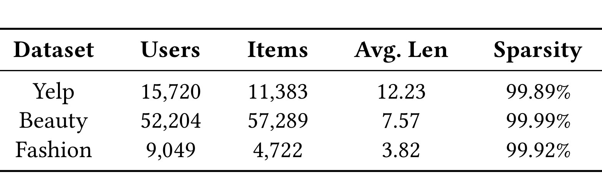
Table 6 补充了三个数据集的规模和稀疏度。Yelp 有 15,720 个用户、11,383 个 item，平均序列长度 12.23，稀疏度 99.89%；Beauty 有 52,204 个用户、57,289 个 item，平均长度 7.57，稀疏度 99.99%；Fashion 有 9,049 个用户、4,722 个 item，平均长度 3.82，稀疏度 99.92%。这些数字说明实验不是在密集行为矩阵上验证小幅收益，而是在极稀疏序列场景里测试 item representation 是否能缓解行为不足。特别是 Beauty 的 item 数远高于用户平均交互长度，长尾 item 很容易缺乏稳定 ID embedding；Fashion 虽然 item 数较小，但平均序列长度只有 3.82，历史上下文短，模型更依赖 item 表征本身。
主结果表比较了 Base、CITIES、MELT、RLMRec、LLMInit、LLM-ESR、LLMEmb、AlphaFuse 和 GenAIR。传统方法 CITIES、MELT 主要利用行为信息增强长尾或上下文表示；语言增强方法则利用 LLM semantic embeddings 或对齐机制。GenAIR 在三数据集和 GRU4Rec、Bert4Rec、SASRec 三种 backbone 上都取得最高结果，论文标注这些最优值相对第二名具有统计显著性。
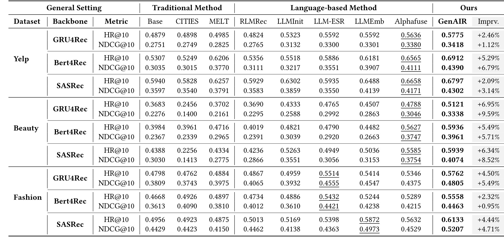
从表中可以看到，Yelp 上 GenAIR 的提升相对温和但稳定。例如 GRU4Rec 的 HR@10 从 AlphaFuse 的 0.5636 提高到 0.5775，NDCG@10 从 0.3380 提高到 0.3418；Bert4Rec 的 HR@10 达到 0.6912，NDCG@10 达到 0.4390，相对第二名提升分别为 5.29% 和 6.79%；SASRec 上也从 0.6658/0.4171 提高到 0.6797/0.4302。Beauty 上提升更明显，尤其 GRU4Rec 的 NDCG@10 从 0.3046 提高到 0.3338，SASRec 的 NDCG@10 从 0.3754 提高到 0.4074。Fashion 上，GRU4Rec、Bert4Rec、SASRec 的 HR@10 分别达到 0.5762、0.5558、0.6133，NDCG@10 分别达到 0.4805、0.4463、0.5207。整体看，GenAIR 对不同 backbone 的收益不是单点偶然，而是 across-model 的 item embedding 改进。
值得注意的是，LLM-based baseline 普遍强于传统 baseline，但并不总是稳定胜过所有方法。例如 RLMRec 在某些设置下表现一般，论文解释为它把 LLM 作为辅助 loss，未能充分利用 semantic representation；LLMEmb 和 AlphaFuse 已经很强，但 GenAIR 仍然超过它们，说明“用 LLM embedding”本身不是终点，关键在于如何构造这个 embedding 以及如何和行为信号结合。GenAIR 的优势来自两个方面：一是 archetype generation 把 item representation 从属性语义扩展到目标用户语义；二是 behavioral calibration 避免生成语义与真实行为脱节。
消融实验在 Fashion 上进行，比较 w/o Pref.、w/o Decod.、w/o Calib. 与完整 GenAIR。这里 Pref. 指 prefill embedding，Decod. 指 decoding embedding，Calib. 指 behavioral calibration objective。结果显示三个组件都不能随意去掉。
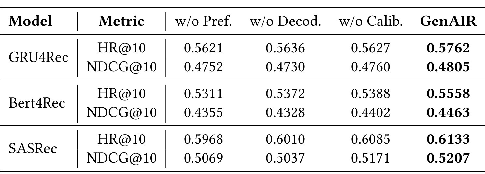
以 GRU4Rec 为例，完整 GenAIR 的 HR@10/NDCG@10 为 0.5762/0.4805；去掉 prefill 后为 0.5621/0.4752，去掉 decoding 后为 0.5636/0.4730，去掉 calibration 后为 0.5627/0.4760。Bert4Rec 和 SASRec 上也有一致趋势。这个结果说明 prefill embedding 和 decoding embedding 并非冗余：前者保存 item factual attributes，后者保存目标受众推断；两者缺一都会降低性能。w/o Calib. 的下降说明，即使有 archetype 生成，如果不把语义空间校准到行为结构，推荐效果也会变差。这支撑了论文的核心论点：GenAIR 不是单纯 prompt engineering，而是 semantic generation 与 behavior-aware geometry 的组合。
超参数实验关注 $\alpha$ 和 $\gamma$。$\alpha$ 控制 $\mathcal{L}_{cal}$ 在总损失中的权重，$\gamma$ 控制 association score 对 pairwise repulsion 的衰减程度。论文在 Fashion + SASRec 上展示了四条曲线。
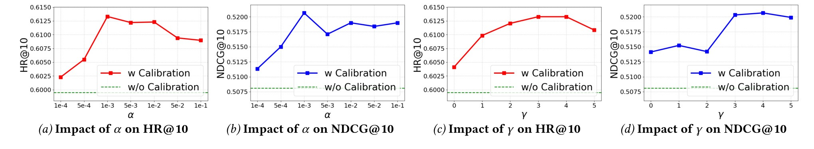
曲线的形状很有解释价值。随着 $\alpha$ 增大，HR@10 和 NDCG@10 先上升后下降，说明 calibration 需要足够强才会改变 embedding space，但过强会压过 ranking objective 或扰乱收敛。$\gamma$ 也呈现类似趋势：如果 $\gamma$ 太小，共现关系对排斥力调节不明显；如果 $\gamma$ 太大，少数强共现 pair 可能过度保留局部结构，削弱整体空间的区分度。论文因此没有把 behavioral calibration 当成越强越好的 regularizer，而是将其视为需要与 ranking loss 平衡的几何约束。复现时应该重点调 $\alpha$ 和 $\gamma$，尤其在数据集稀疏度、item catalog 大小和共现分布不同的工业数据上，这两个参数的最优区间可能会漂移。
论文还比较了不同基础 LLM：Llama 2-7B-Chat、Llama 3.1-8B-Instruct 和 Qwen 2.5-7B-Instruct。结果在 Fashion 数据集上给出。
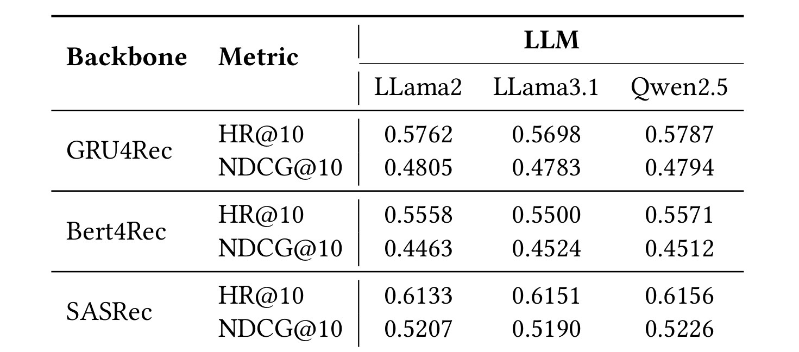
从表中看，不同 LLM 之间差距不大，但 Qwen 2.5 在多数设置上略优。例如 GRU4Rec HR@10 上 Qwen2.5 为 0.5787，略高于 Llama2 的 0.5762；Bert4Rec 的 NDCG@10 上 Llama3.1 和 Qwen2.5 都高于 Llama2；SASRec 的 HR@10 和 NDCG@10 上 Qwen2.5 分别达到 0.6156 和 0.5226。这个实验说明 GenAIR 的框架不绑定某个 LLM，但生成质量仍会影响最终表征。结合附录案例，Qwen2.5 对婴幼儿防晒帽的目标受众推断更集中，可能解释其在部分设置上更好。对实际应用来说，基础 LLM 的选择可以根据成本、语言覆盖、metadata 领域知识和生成稳定性来权衡。
效率实验比较 trainable parameters 和 inference GFLOPs。论文把 SASRec、LLM-ESR、LLMEmb、AlphaFuse 与 GenAIR 放在一起。
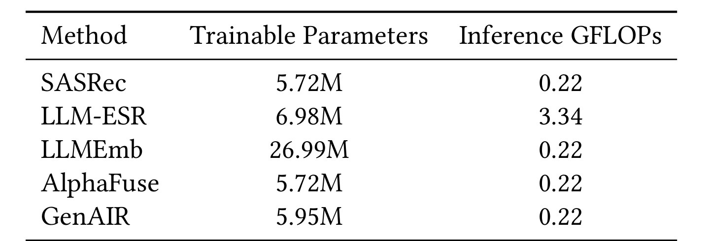
结果显示，SASRec 和 AlphaFuse 的 trainable parameters 为 5.72M，GenAIR 为 5.95M，仅有小幅参数增加；LLMEmb 需要 26.99M，明显更重；LLM-ESR 的推理 GFLOPs 为 3.34，而 GenAIR 与 SASRec、LLMEmb、AlphaFuse 都是 0.22。这个结果验证了方法设计中的离线/在线分层：LLM 生成和 hidden-state 抽取在离线 item embedding 构建阶段完成，在线推理不再调用 LLM，也不引入额外 sequence model 复杂度。对于推荐系统工程，这一点比单纯准确率提升更重要，因为许多 LLM4Rec 方法难以部署的原因正是推理成本和延迟。
最后，论文用 Figure 5 分析不同流行度 item group 的 embedding 分布。作者把 Fashion 数据集里的 item 按流行度分成五组，并比较 SASRec、LLMEmb、GenAIR 的 PCA 可视化和 group entropy。
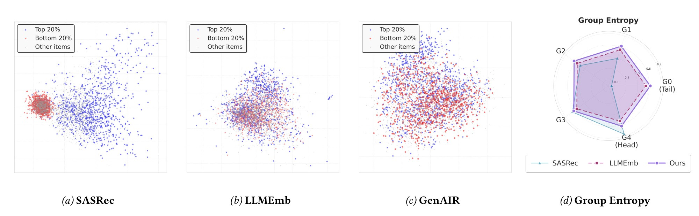
可视化显示，SASRec 的 long-tail item embedding 高度集中在一个小区域，说明 ID-based 或行为主导的表示在长尾上容易塌缩；LLMEmb 更分散，但不同 group 之间仍有混杂；GenAIR 的点云更均匀，tail group 和 head group 的分布更平衡。右侧 group entropy 进一步量化了这一点：GenAIR 在多数 group 上保持更高或更均衡的信息丰富度。论文的解释是，archetype embedding 提供了超越历史行为的语义细节，而 behavioral calibration 又避免语义空间脱离真实偏好结构。这一节虽然不是直接指标，但为主结果提供了机制解释：GenAIR 的提升不是只来自某个热门 item group，而是改善了 item representation 的整体空间形态。
综合实验来看，GenAIR 的证据链比较完整。Table 2 证明它有效；Table 3 证明关键组件必要；Figure 4 证明校准权重需要适中；Table 4 证明基础 LLM 可替换；Table 5 证明推理开销可控；Figure 5 解释了表示空间为什么更有信息量。仍需保留的限制是：这些结果全部来自论文设定下的离线 benchmark，未在本轮重新训练复现；数据集主要是 Yelp 和 Amazon 子集，和超大规模工业推荐的曝光偏差、实时更新、召回候选池、线上 A/B 指标仍有距离。若用于真实系统，还需要验证 metadata 质量、LLM 生成稳定性、共现统计窗口、离线 embedding 更新周期，以及和现有 retrieval/ranking pipeline 的兼容性。
4. 总结
GenAIR 的核心贡献可以概括为一句话：把 item representation 从“静态属性或 ID 行为向量”扩展为“由 LLM 生成的目标受众 archetype，并由真实行为共现校准的向量”。这个想法比直接使用 LLM embedding 更进一步，因为它利用了 LLM 的生成和推理能力，而不是只把 LLM 当文本 encoder。它也比纯行为对齐更稳，因为行为共现只调节 embedding space 的排斥强度，并没有完全覆盖语义表示。对于推荐算法方向，这是一种很有启发性的 LLM4Rec 路线：不让 LLM 在线做最终推荐，而是把 LLM 用作离线 item semantics generator。
工程上，这篇论文最值得关注的点有四个。第一，archetype prompt 很简单，说明方法并不依赖复杂 prompt 模板，但也意味着生成质量高度依赖 metadata 和基础 LLM。第二，prefill 与 decoding hidden states 分开抽取是一个可复用技巧，适合其他需要区分“输入事实”和“生成推断”的推荐表征任务。第三，behavioral calibration 的 differential repulsion 设计比直接拉近共现 item 更温和，可以减少语义空间被行为噪声完全覆盖的风险。第四，推理阶段无额外 LLM 成本，使它比许多生成式推荐方案更接近实际服务。
局限也很明确。其一，archetype 可能产生幻觉或过宽用户群，尤其在 metadata 简短或领域专业性强时。其二，行为共现 $C(i,j)$ 继承历史曝光策略和流行度偏差，如果没有去偏，校准可能强化旧系统结构。其三，论文只展示了三个公开数据集和三类 backbone，没有覆盖多阶段工业推荐中的召回、粗排、精排、重排联动。其四，离线 LLM 生成 item catalog 的成本、更新频率和缓存策略需要在真实系统中单独评估。其五，Table 5 的推理 GFLOPs 不包含离线 LLM 生成成本，因此不能把它解读为全链路训练构建成本为零。
如果要复现或继续跟进，我会优先检查五件事。第一，跑通代码仓库中 metadata 到 archetype 的生成脚本，保存每个 item 的 prompt、生成文本和 hidden-state pooling 结果，便于审计质量。第二，分别替换 LLM、prompt 和 pooling 策略，观察 prefill/decoding 的贡献是否稳定。第三，对 $C(i,j)$ 的时间窗口、session 定义、去热门 item 平滑做消融，判断 behavioral calibration 是否被流行度主导。第四，在更多长尾强、冷启动强或跨域场景中验证 Figure 5 的 embedding entropy 结论。第五，把 GenAIR embedding 接到现有召回和排序链路中，比较离线 HR/NDCG 与线上点击、停留、转化等指标是否一致。
总体判断是，GenAIR 的价值不在于提出了一个复杂的新推荐 backbone，而在于给 item representation 提供了一个可解释的中间语义层：目标受众 archetype。这个中间层把推荐系统中长期存在的“item 适合谁”显式化，再用行为共现把它拉回真实交互空间。对于推荐算法和 LLM4Rec 交叉方向，这比直接把 description embedding 拼进模型更有结构感，也更容易解释为什么某些 item 在长尾或稀疏场景中得到改善。它仍需要更大规模和更复杂线上链路验证，但作为离线语义增强 item embedding 的研究路线，值得后续持续关注。